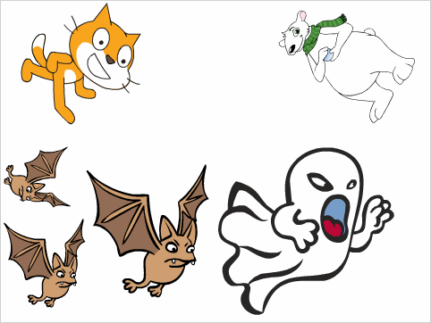
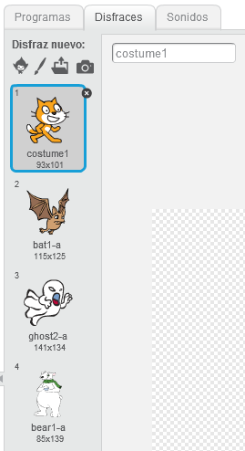
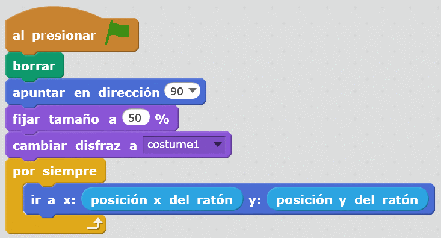
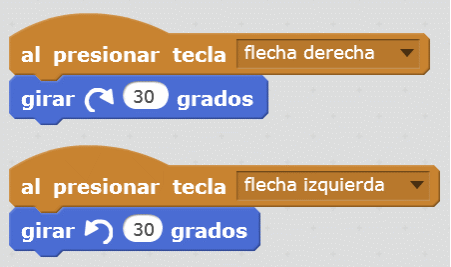
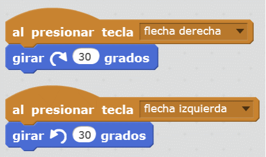

3. Draw costumes¶
{kind=link}
In this practice we are going to program a game that consists of drawing different characters on the screen with different sizes, turns and positions.
We start the Scratch editor.
In the costumes tab, we delete one of the cats and add several more characters.
Next we program the following instructions.
 


At this moment we can play with the screen to draw characters with the following controls.
- Up Arrow = Plus Size
Down arrow = Minus size
Right Arrow = Rotate Costume Right
Left Arrow = Rotate Costume Left
Space key = Change the costume to another character
Mouse click = Make a copy of the costume on the screen
{kind=link}
{kind=link}
Exercises¶
- Make an artistic drawing in which all the costumes appear on a stage.
- Add new costumes to be able to draw other objects as well.
- Modify the program so that when you seal the costume (mouse click) six images of the costume appear rotated 60 degrees each.
- Modify the program so that when you seal the costume (mouse click) four images of the costume of the original size appear, 50%, 25%